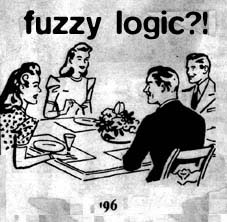

hey, thanks for checkin our page bub. groovey ehh? we're feeling kinda hungry in the nine six, so look for a tasty e.p. well believe it or o' not this is as much as ya' gets.....for now....were too busy cookin' up tunes to be playin' on the computer. our first e.p.(fuzzy logic?!--cool name, ehh?) is still available, so ya better axe someone how to get it. try that 614.470.1171 number. now go waste bandwidth somewhere else......
--charles/aka monochrome
fuzzy logic?!
produced by monochrome
4 songs on grey swirly vinyl. experimental but still spinnable.
track listing includes:
- -
- the touch - an undescribable track, just get it!
- belgian waffle - on the smooth experimental tip
- fuzzy logic?! - ragga-influenced but sounding more like an ode to tom & jerry. very experimental beat-cutting.
due to the less-than-perfect pressing we are offering this ep for only $6 including postage.
please call 614.470.1171 or refer to our ordering information page.